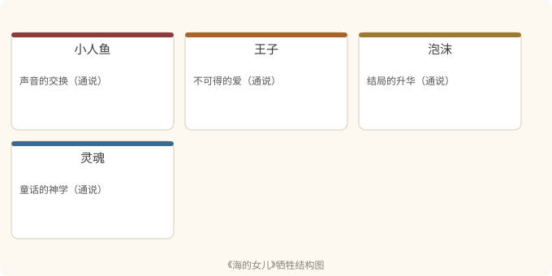

海的女儿
一、基本信息
| 作者 | 安徒生 |
|---|---|
| 成书/出版 | 1837年（作者页注记：Britannica 语境——发表年份通说待核） Hans Christian Andersen (Danish author) — Encyclopaedia Britannica（百科全书） |
| 国别/地区 | 丹麦 |
| 时代 | 近代 · 19世纪30年代 |
| 体裁 | 童话 |
| 语言 | 丹麦语 |

《海的女儿》牺牲结构图（主题·结构图）
二、创作背景
作者页注记：海的女儿、丑小鸭、白雪皇后——'（Britannica 语境）'。
Britannica：安徒生——童话作家（作者页语境）。
题材（通说待核）：小人鱼以声音换双腿——爱而不得化为泡沫。
三、内容脉络
（通说待核）海底宫殿的少女与海上王子。
（通说待核）'泡沫'的结尾与灵魂的可能。
四、主要人物表
| 人物 | 身份 | 说明 |
|---|---|---|
| 小人鱼 | 海王之女 | （通说待核） |
| 王子 | 岸上的人 | （通说待核） |
五、主题与艺术特点
- 牺牲与'不灭的灵魂'（通说待核）。
- 身体的代价：声音（通说待核）。
- 童话的悲剧性（通说待核）。
六、影响与评论
- Britannica：安徒生童话序列（作者页注记）。
Hans Christian Andersen (Danish author) — Encyclopaedia Britannica（百科全书） - Britannica：安徒生为童话大师（作者页语境）。
Hans Christian Andersen (Danish author) — Encyclopaedia Britannica（百科全书）
七、阅读建议
难点
- 童话与民间故事的区别。
- '灵魂'的神学设定。
- 《海的女儿》（人民文学出版社《安徒生童话全集》等——通说待核）。
- 丹麦文原版（公有领域）。
安徒生代表作；与《丑小鸭》对读。
八、待核实
- 1837年发表（《童话集》第三分册说）待核。
- '泡沫'结尾细节待核。
- 小人鱼人名核对（无名的'小女儿'说）。